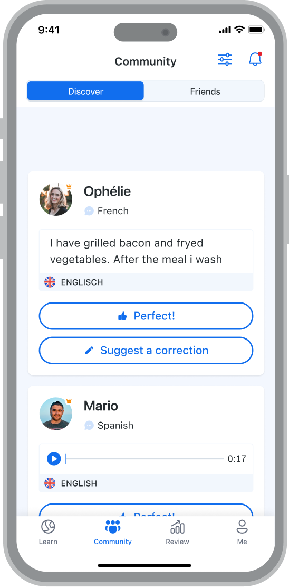
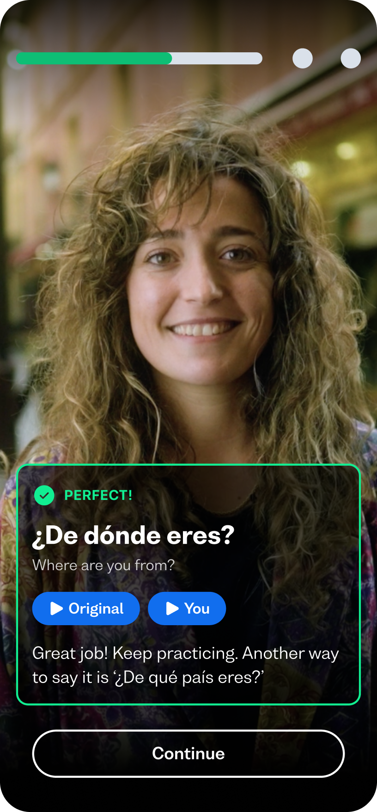

用 Busuu 学外语半年：它到底比同类工具强在哪
用过七八款语言学习 App 后，Busuu 是唯一让我坚持走到开口的那个。这篇聊聊它的差异化设计、为这些优势付出的代价，以及什么样的人应该选它。
语言学习 App 这个类目已经拥挤到令人麻木。你随便搜一下应用商店，能跳出一堆界面花哨、声称"每天 10 分钟搞定一门语言"的产品。免费的有大厂背书的巨头，付费的有走精品路线的小团队，中间还穿插着各种游戏化做得飞起的新人。在这样的格局里，Busuu 算不上最便宜的，也算不上营销最猛的，但它是我用了半年之后唯一没有卸载、反而续了两次订阅的那个。
这篇文章不打算罗列功能清单——Busuu官网的介绍页比我写得全。我想聊的是，在同类工具普遍把重心放在"让你坚持打开 App"这件事上的时候，Busuu 偷偷做了几件反常识的设计，恰恰是这些设计让我从"刷课时刷到 A2"走到了"敢开口跟外教聊"。
它的差异化：三件别家没做好的事
社区批改不是噱头，是真有人在改
大多数语言学习产品的社区功能都是鸡肋：要么是论坛式的灌水区，要么是让你给别人点个赞的伪互动。Busuu 不一样——它的社区批改是整个产品学习链条里的硬环节。
具体说，每学完几课时，时间线里会出现一个"写作练习"或"口语练习"的节点。你写一段百来字的短文，或者录一段 30 秒的语音，提交之后，真的会有另一个学同语种的真人用户来给你改。改的不是拼写错误那么简单——我提交过一段德语自我介绍，批改的人给我标了三处冠词误用，还在旁边写了一句"这里用过去式更自然"。反过来，我作为英语学习者，也被要求给别人批改英语作文——这不是什么额外的社区任务，是你能获得足够批改额度的必要条件。
这套机制妙在它是双向的：你改别人的，别人改你的，双方都在输出中巩固。而且系统把批改质量跟你的批改优先级挂钩——改得认真的人，自己的作业也会被更快、更仔细地批改。免费版提交后排队可能要等一两天，但 Premium 以上是优先队列，通常几小时内就有回音。我前三个月基本每周提交两次写作练习，收到的批改质量稳定，没有出现"好棒！加油！"这种灌水式反馈。

开口路径是阶梯，不是悬崖
几乎所有语言学习 App 都有一个共同的问题：输入练得很溜，输出卡得死死的。你能听懂、能阅读、能做选择题，但一让你开口说，脑子里的单词全散架了。Busuu 是我见过唯一一个把"从输入到输出"设计成一条渐进阶梯的产品，而不是突然把你扔到一个"跟 AI 对话"的页面里让你自生自灭。
这条路径我也是翻Busuu文档才搞清楚完整逻辑的。这条阶梯分四步：
- 社区批改（最低门槛）：先写下来再提交，没有即时压力，对方看不到你的脸，改错了也没人笑你。这一步练的是组织完整句子的能力，而不是开口的勇气。
- 口语跟读：对着视频里的原句逐词模仿录音，系统给发音打分。你说的是别人已经写好的句子，不用临场组句，只需要把音发准。
- AI 情景对话：跟 AI 角色完成具体场景任务——比如在咖啡馆点单、在机场问路。AI 会分析你的句子，但不会像真人老师那样当场追问你"为什么这里用这个词"，心理压力比跟真人对话小得多。
- 真人小班课：45 分钟，最多 5 个学员，认证教师直播授课。这是输出链的最后一级，也是唯一需要用电脑加入的环节——手机端只能预约，上课必须切到桌面浏览器。

我见过太多人跳过前三步直接买课，结果就是全程紧张、沉默居多，挫败感比收获还大。按顺序走的好处是，每一步都在为下一步打底：社区批改把地道表达焊在脑子里，跟读把发音练到肌肉记忆，AI 对话攒够了临场组句的胆量，到了小班课上，你才接得住教师的连续提问。
三档订阅的边界清晰，没有隐藏消费陷阱
这点听起来像运营细节，但实际体验差异很大。很多同类产品的免费版就是个广告平台，Premium 解锁一半功能，然后在你最上头的时候弹出一个"Pro 专属"的付费墙，让你觉得自己买 Premium 买亏了。
Busuu 的三档边界在订阅页就给你列得明明白白：
- 免费：完整课程能用，社区批改能提交但次数有限、排队靠后，AI 对话有限试用。够用，但每天会插广告。
- Premium：解锁复习工具（词汇+语法）、离线模式、无广告、无限批改提交+优先队列、结业证书、跳过课时。没有 AI 口语功能。
- Premium Plus：在 Premium 基础上加 AI 情景对话、发音反馈、错题修复、专属课程、学习计划，还有打卡保护的升级。
没有什么"Plus 才有这个但 Premium 也能单买"的灰色地带，每一档解锁的功能是完整的一组。客户端获取直接走官方下载，也支持各应用商店搜索。你如果确定要主攻口语，直接上 Plus；如果只是想读写打底加离线学习，Premium 足矣；免费档真的能走完一门课的完整基础流程，不是那种让你体验三分钟就逼你付费的套路。
它的取舍：这些优势不是白来的
说了三个好的，也要说说 Busuu 为这些设计付出了什么代价。
第一，上手门槛比游戏化产品高。 Busuu 的界面干净，但干净的代价是"没那么好玩"。打开 App 是你的学习时间线，不是一堆彩色卡片、成就徽章、排行榜。对那种需要"每天领个金币才能坚持"的人来说，Busuu 可能显得有点冷。我有个朋友用惯了游戏化做得飞起的产品，第一次打开 Busuu 说"这界面怎么这么素"，然后三天就卸载了。但如果你想要的是"学到东西"而不是"攒到多少积分"，这个取舍是合理的——Busuu 把做游戏的精力都花在做内容上了。
第二，多设备同步不是全自动的。 账号本身是跨端唯一的，手机、网页、平板登录同一个账号，课时进度实时同步，这点没问题。但有一类东西不在云端：iOS 端下载的离线课程存在本地。换设备或者卸载重装后，离线内容需要重新下载。进度不丢，但你得重新花时间把离线包拉回来。还有，清理应用缓存也会清掉已下载的课时——缓存可以随便清，但清完记得重新下载。
第三，真人小班课有额外门槛。 小班课不是订阅就能上的，需要单独购买课程额度。而且预约可以在任何设备上做，但上课必须用电脑（Chrome 或 Firefox 最新版）。我第一次想用手机上，到了时间点才发现进不去课堂，差点错过那节课。另外，一对一课主要面向企业团队版客户，个人学习者只有 5 人小班可选——好处是价格比一对一便宜，坏处是你得跟着班级节奏走，不能让老师完全按你的进度来。
第四，离线模式只在 Premium 以上提供。 免费版用户在没网的时候什么都做不了。如果你经常坐地铁或者出差路上想蹭学习时间，这个功能可能会让你考虑升级。不过 Premium 的离线模式体验不错，下载一次之后所有课时都能离线刷，不用逐章单独下。
选购结论：谁应该选它，谁应该看看别的
写了这么多，直接给结论。
选 Busuu 的人：
- 你学外语不只是想"能看懂"，而是有明确的"要开口"目标——不管是旅行、工作还是兴趣驱动，Busuu 的输出阶梯是同类产品里最扎实的。
- 你不排斥付费，而且认同"真人反馈比 AI 更靠谱"这个前提。Premium Plus 确实不便宜，但如果你真的把社区批改、AI 对话、小班课这条链走完，每一分钱都值。
- 你想要一个不折腾、没有隐藏消费的学习工具——三档订阅边界清晰，免费档不是摆设，换设备进度不丢，这些都是长期使用才会感受到的踏实。
不选 Busuu 的人：
- 你需要强游戏化刺激才能每天打开 App，对"素"界面和"没那么好玩"的内容没有耐心。
- 你只想学点应急的日常用语，没有长期学习计划——免费档能满足基本需求，但 Busuu 的核心优势（社区批改、输出阶梯）只有在你坚持半年以上才会真正显现。
- 你预算极其有限，或者完全不能接受付费——Busuu 的免费版能用但体验确实受限，而且没有"攒金币解锁付费功能"这种替代路径。
最后说一句明确的推荐：在同类工具里，Busuu 不是最便宜的，也不是功能最多的，但它是唯一一个让我从"刷课时"走到"敢开口"的产品。如果你真的想把一门外语学到能用的程度，它值得你试试看——哪怕先从免费档开始，走完一两章之后，你自己就会知道要不要续费了。
关于 Busuu 的中文资料整理，我同步放在了GitHub、Gitee和GitCode三个仓库，方便不同偏好的朋友查阅。